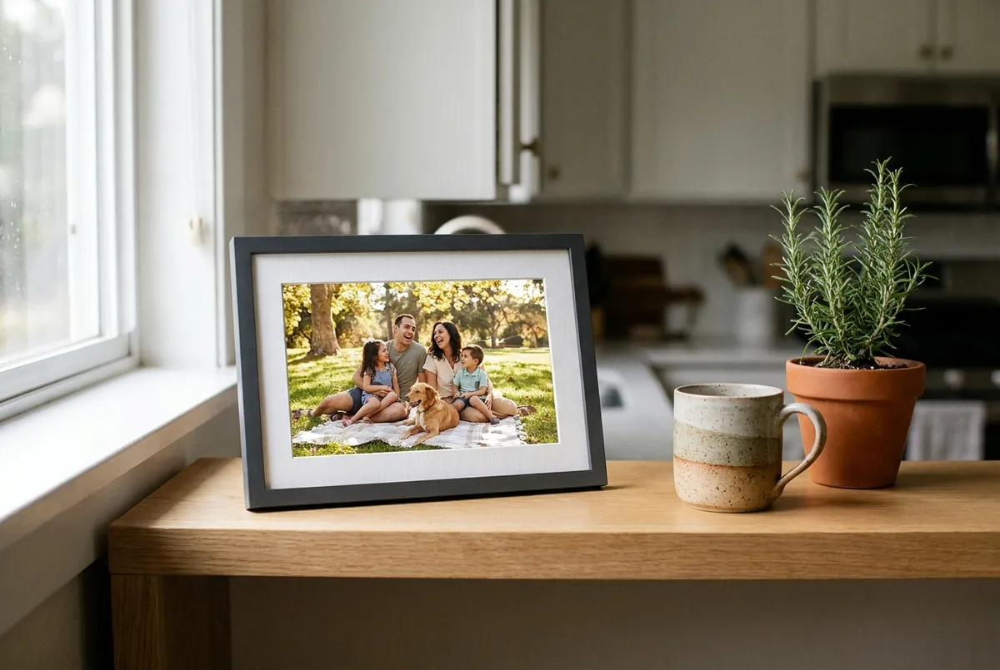
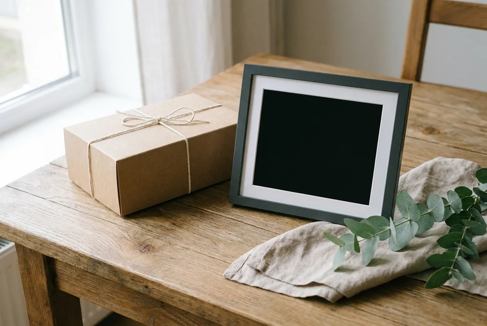

Does the frame need a subscription?
Aura’s help center says no. Photo storage, sharing, the app and inviting contributors are included with the frame. You pay for the frame itself; check its price and any taxes at checkout.
Gift notes · Digital photo frames
A 10.1-inch frame that shows photos sent from relatives’ phones. Here is how it works, what the home needs, and what to check before ordering one as a gift.
Sunday Shelf · Published

Sponsored content. Sunday Shelf publishes product notes with affiliate links and may earn a commission if you buy through them. We are not Aura Home, Inc., we do not sell the frame and we did not test it. The details below come from Aura’s product and help pages, listed at the end.
A relative who has been invited to the frame chooses photos or short videos in the Aura Frames app. Aura lists video clips and Live Photos of up to 30 seconds.
Uploaded photos are stored on Aura’s cloud servers and shown on the frame from there, which is why Aura says contributors can send them from anywhere.
Invited members can change most settings remotely in the app, including the slideshow interval, photo order and on/off timer. Wi-Fi changes are the exception: Aura says they have to be made where the frame is.
Because the Carver Mat displays photos in landscape only, Aura’s portrait pairing feature can show two vertical photos side by side. A built-in speaker plays sound from video clips; Aura notes that videos start silently until someone touches the frame’s touch bar.
Check the available finishes, the current price and delivery dates before deciding.
View the Carver Mat at Aura → One-time purchase. Aura says no subscription is required. Confirm the price, taxes, delivery and return terms at checkout.Aura offers two ways to get a frame ready before the recipient opens it. The giver can create a gift code in the app, add a message, photos and other contributors, and then share the code with the recipient. Alternatively, with the boxed frame in hand, the giver can scan the setup code printed on the box and add the same kind of content, which appears once the frame connects to Wi-Fi. Aura recommends using only one of the two methods.
If the recipient does not use a smartphone or tablet, someone with the app has to help. A relative can set the frame up at the recipient’s home, or, with the frame in their possession, the giver can enter the recipient’s Wi-Fi details in advance during gift preparation. Aura notes that a typing mistake there keeps the frame from connecting, and that later Wi-Fi changes have to be made in person.
Aura also advises against plugging in a prepared gift frame to try it out, because that can claim the gift on the giver’s network. After setup, the owner can use the touch bar on the frame to move between photos, remove a photo, turn the display on or off and play video sound. Other settings are handled from the app by invited members.

| Display | 10.1-inch diagonal LCD, landscape |
|---|---|
| Resolution | 1280 × 800 |
| Frame size | 10.5 × 7.3 × 2.1 inches |
| Weight | 1.61 lb |
| Wi-Fi | 2.4 GHz network with internet access |
| Power | Power adapter rated for 100–240 V; not cordless |
| Placement | Tabletop stand |
| Video | Clips and Live Photos up to 30 seconds, with sound |
| Setup device | iPhone or iPad on iOS/iPadOS 15 or later, or Android 8.0 or later with Bluetooth LE |
| Warranty | One-year warranty covering manufacturing or hardware defects |
Aura’s website lists the Carver Mat alongside its other models, including dual-orientation and larger frames.
Check the Carver Mat and other models → One-time purchase; no subscription required, according to Aura. Taxes, delivery options and return terms are shown before you pay.Aura’s help center says no. Photo storage, sharing, the app and inviting contributors are included with the frame. You pay for the frame itself; check its price and any taxes at checkout.
Yes, once someone with the app has set it up. The owner can use the touch bar for basic controls, while invited members manage the settings from the app. Wi-Fi changes have to be made in person.
Aura lists video clips and Live Photos of up to 30 seconds, with sound from a built-in speaker. Aura says videos cannot be added through the web uploader or Google Photos; the app handles them.
For frames bought on auraframes.com, Aura describes a 90-day return policy with a prepaid return label. Returns of gifts require the original order number. Frames bought elsewhere follow that seller’s policy.
Aura handles orders, setup help and warranty claims through its help center. Sunday Shelf has no access to orders. For questions about this page, write to hello@sundayshelf.site.
Details were checked against these pages on November 16, 2026 and can change. Aura’s website is the reference for current specifications, prices and terms.